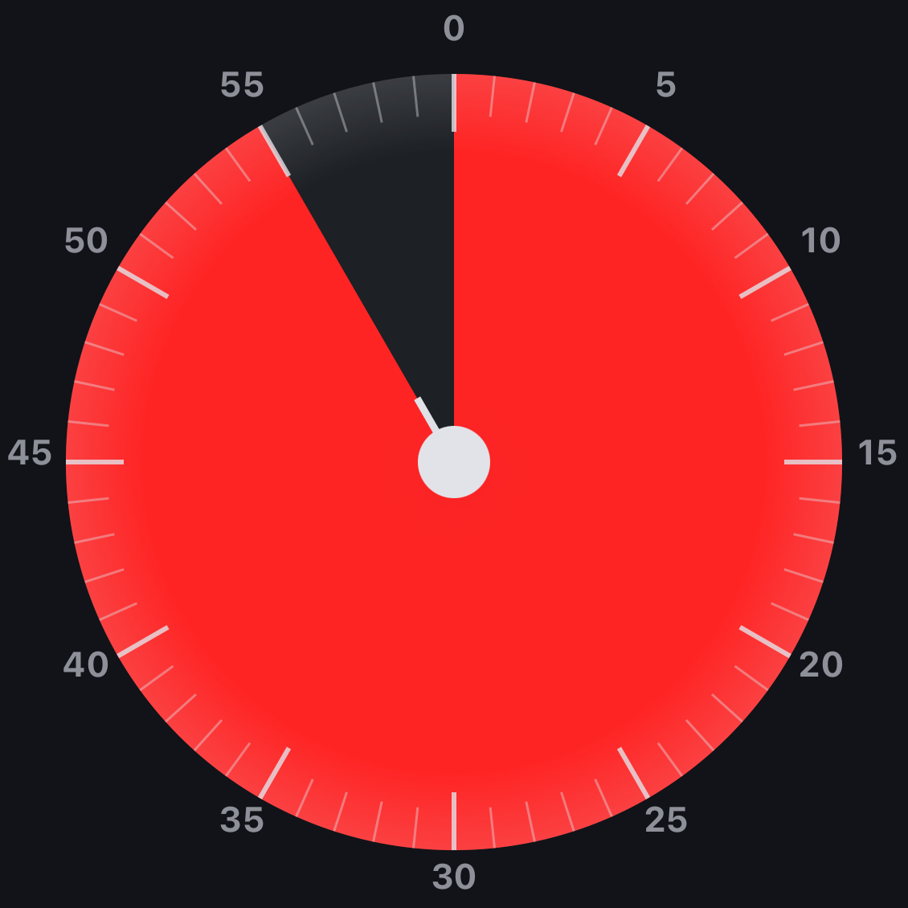
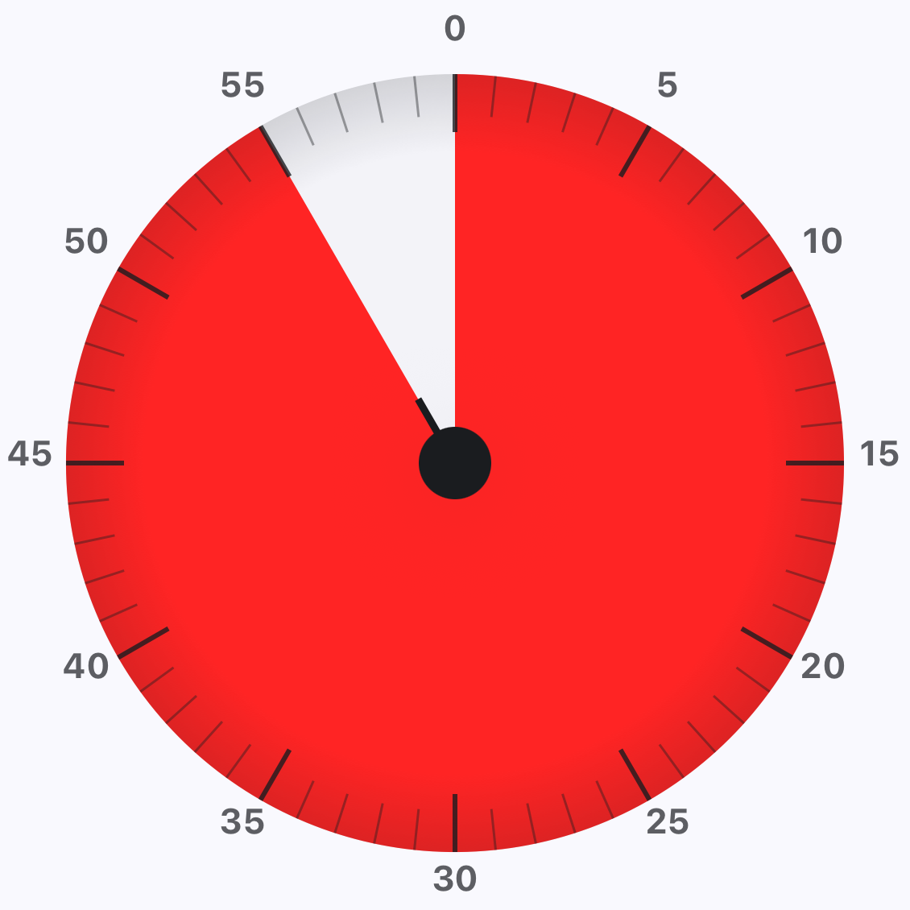

60분 다이얼60-minute dial 60分钟表盘 60分ダイヤル
손가락으로 돌려서 1초 만에 시간을 설정. 빨간 호가 남은 시간을 직관적으로 보여줍니다. Spin to set time in one second. The red arc shows what's left at a glance. 一秒旋转设定时间。红色弧线一眼显示剩余时间。 指で回して一秒で時間を設定。赤い弧で残り時間が一目で分かります。
사진을 찍어야 꺼지는 알람과, 해제 직후 자동으로 시작되는 루틴 타이머. ShutTimer는 일어날 수밖에 없는 환경을 만듭니다. A camera-mission alarm and a routine timer that fires the moment you dismiss it. ShutTimer makes getting up the only option. 必须拍照才能关闭的闹钟，与解除瞬间自动启动的习惯计时器。ShutTimer 让起床成为唯一选择。 写真ミッションで止める目覚ましと、解除直後に自動で始まるルーティンタイマー。ShutTimer は「起きる」を唯一の選択肢に変えます。
한 손에 들어오는 도구 세 가지로, 아침은 끝까지 마무리됩니다. Three tools, one ritual. From the first ring to the last task. 三个工具，一个仪式。从第一声铃响到最后一项任务。 三つのツール、ひとつの儀式。最初の音から最後のタスクまで。


손가락으로 돌려서 1초 만에 시간을 설정. 빨간 호가 남은 시간을 직관적으로 보여줍니다. Spin to set time in one second. The red arc shows what's left at a glance. 一秒旋转设定时间。红色弧线一眼显示剩余时间。 指で回して一秒で時間を設定。赤い弧で残り時間が一目で分かります。
미리 정해둔 장소 — 세면대, 창문, 주방 — 의 사진을 찍어야만 알람이 꺼집니다. 침대 밖으로 나오게 만드는 가장 확실한 방법. Aim your camera at a pre-set spot — sink, window, kitchen — to dismiss. The surest way out of bed. 将相机对准预设地点——洗手台、窗户、厨房——才能解除。最让你下床的方法。 洗面台、窓、キッチンなど、事前に決めた場所にカメラを向けて解除。ベッドから出る最確実な方法。
알람이 꺼진 직후, 미리 만들어둔 루틴 타이머가 자동 시작. 다음 할 일을 고민할 필요가 없습니다. The moment the alarm dies, your routine starts itself. No deciding what's next. 闹钟一停，习惯立刻自动开始。无需思考下一步做什么。 アラームが止まった瞬間、ルーティンが自動で始まります。次に何をすべきか迷う必要はありません。
아침 한 번을 잘 보내는 것이 하루를 결정합니다. 한 단계가 끝나면 다음 단계가 자동으로 이어집니다. A good morning sets the day. As one step ends, the next begins on its own. 美好的早晨决定一整天。一步结束，下一步自动开始。 良い朝が一日を決めます。ひとつのステップが終わると、次が自動で始まります。
컨디션과 습관에 따라 세 가지 강도 중에서 선택할 수 있어요. Pick the difficulty that matches your mood and habit. 根据心情和习惯选择难度。 気分や習慣に合わせて難易度を選べます。
한 번 탭하면 즉시 해제. 일찍 깬 날, 잠깐의 낮잠 끝에 쓰기 좋아요. One tap, done. For early risers and quick power naps. 一点即解除。适合早起或短暂小睡。 一回タップで完了。早起きや短い昼寝向け。
손에 쥐고 흔들어야 꺼집니다. 손목이 깨면 정신도 깨요. Grab and shake. Waking your wrist wakes your mind. 拿起手机摇晃。手腕醒了，头脑也跟着醒。 手に取って振りましょう。手首が目覚めれば、頭も目覚めます。
미리 정한 장소를 카메라로 비춰야 해제. 침대 밖으로 나오게 만드는 가장 강력한 방법. Point your camera at a pre-set spot to dismiss. The hardest way to stay in bed. 将相机对准预设地点才能解除。最难赖床的方式。 事前に決めた場所にカメラを向けて解除。ベッドに居続けるのが最も難しい方法。
간단한 사칙연산을 풀어야 알람이 꺼집니다. 잠든 머리를 가장 빨리 깨우는 방법. Solve a quick arithmetic problem to dismiss. The fastest way to boot a sleepy brain. 解一道简单算术题才能关闭。最快唤醒困倦大脑的方法。 簡単な計算問題を解いて解除。眠い脳を最速で起動する方法。
화면에 나타나는 문장을 그대로 따라 입력해야 해제. 단어를 읽고 쓰는 동안 뇌가 활성화됩니다. Retype the sentence shown on screen to dismiss. Reading and writing wake the mind fully. 在屏幕上重新输入显示的句子才能解除。读写之间，大脑完全清醒。 画面に表示される文を入力して解除。読んで書くうちに、脳がしっかり目覚めます。
15초 만에 첫 알람을 만들고, 일어날 수밖에 없는 환경을 세팅하세요. Set your first alarm in 15 seconds — and design a morning you can't sleep through. 15秒设置首个闹钟，打造一个让你无法继续睡的早晨。 15秒で最初のアラームを設定し、寝過ごせない朝をデザインしましょう。